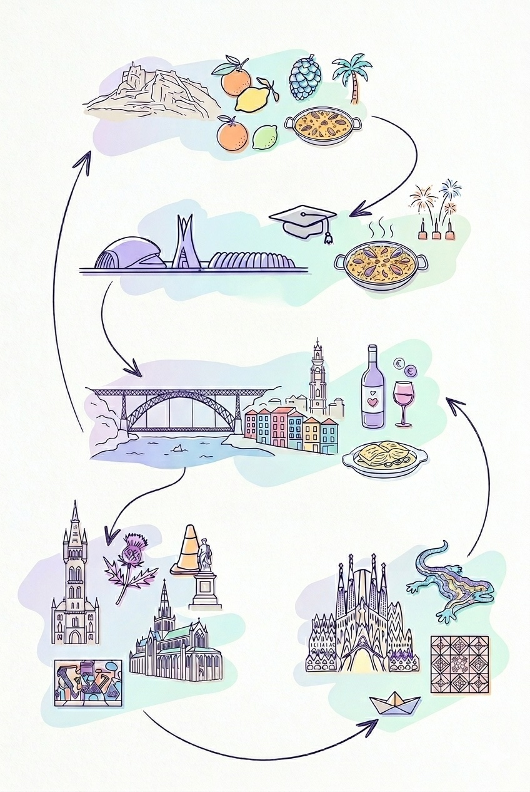

os invitamos a nuestra boda
Finca Cañada Honda · Librilla, Murcia
Entre olivos centenarios y cielo murciano,
bajo la luz dorada del atardecer.
el lugar
Enclavada en el paraje natural de Librilla, en el corazón de la huerta murciana, la Finca Cañada Honda guarda entre sus muros de piedra siglos de sol mediterráneo.
La jornada comienza con la ceremonia en el jardín exterior, rodeados de olivos centenarios, y concluye bien entrada la noche bajo las estrellas del campo murciano.
Jardín de los olivos · al aire libre
Terraza sur con vistas al campo
Gran salón de piedra y terraza
Patio interior · música hasta el amanecer
Cómo llegar
Finca Cañada Honda
Paraje Cañada Honda, s/n · Librilla (Murcia)
A 25 min de Murcia capital · A 45 min del Aeropuerto RMU
descansar
~5 min · coche
Hotel rural entre olivos con piscina y ambiente sereno. Tarifas especiales negociadas para los invitados. Desayuno regional incluido.
Ver hotel →~15 min · coche
Hotel moderno a las afueras de Murcia capital. Gran aparcamiento y posibilidad de lanzadera a la finca para el bloque reservado.
Ver hotel →~25 min · coche
En pleno centro histórico de Murcia, junto a la Gran Vía. Ideal para quienes quieran aprovechar el viaje para visitar la ciudad.
Ver hotel →Para información sobre tarifas especiales escríbenos a hola@sofiayalfredo.es
el camino
La finca se encuentra en las afueras de Librilla, Murcia, a unos 20 minutos de la capital murciana por la autovía A-7.
Desde Murcia capital: A-7 dirección Cartagena, salida Librilla. Habrá señalización desde el pueblo. Amplio aparcamiento gratuito en la finca.
Organizaremos un autobús de ida y vuelta desde Murcia centro. Os confirmaremos punto de recogida y horarios próximamente.
El Aeropuerto Internacional Región de Murcia (RMU) está a 30 min. Taxi o coche de alquiler recomendado.
Finca Cañada Honda · Librilla, Murcia
cómo venir
Celebramos al aire libre en septiembre bajo el sol murciano. Queremos un ambiente elegante y festivo: etiqueta garden mediterránea.
Tejidos ligeros y naturales, colores cálidos de la tierra. Para quienes lleven tacón, cuña o plataforma para caminar cómodo por el jardín.
¿vendrás?
Confírmanos tu asistencia antes del 15 de julio de 2026.
Nos ayuda enormemente para organizar el día perfecto.
si quieres...
Vuestra presencia es el mayor regalo que podríais hacernos. Compartir este día con las personas que queremos es todo lo que necesitamos.
Si aun así queréis contribuir con algo más, hemos decidido dedicar nuestro primer año de casados a recorrer el sudeste asiático juntos. Cualquier aportación irá directa a esa aventura.
También tenemos lista de bodas en El Corte Inglés con algunas cosas para nuestro nuevo hogar, por si preferís algo más concreto.
Aportación al viaje
Sofía Perea & Alfredo Torregrosa
ES12 3456 7890 1234 5678 9012